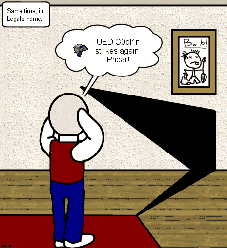

BSP Hole
A BSP hole is an error in the BSP Tree which results in visual and physical errors when editing and playing a map.
Symptoms
Holes can manifest themselves as:
- a player can walk through walls and fall through floors.
- a spot of the map where the player dies for no reason
- an invisible obstacle
- leaking zones: level full of water for example. These tend to happen when zone sheets touch complex brushes. First check the the zone portal brush is large enough to properly seal off the zone.
- a surface which doesn't display the texture properly by revealing:
- parts of the map which shouldn't be visible from that location
- a black area in UnrealEd's 3D viewport which produces a HOM (hall of mirrors) effect in the game.
If the surface belongs to a semisolid brush, see semisolid errors.

An error in the BSP tree affects part of a wall and floor. A black hole or "hall of mirrors" is the result. |
Locate the Offender
Find the hole in Zone/Portal view. The edges of the hole correspond to a BSP cut. Identifying which part of the geometry makes this cut can often solve the problem.
The Mychaeel Patented BSP Hole Detector
It's much easier to spot Hall of Mirrors in maps if the screen is covered with a translucent red fog; at Hall of Mirrors locations, the fog builds up to a solid red blotch and makes discovering Hall of Mirrors pretty easy. You can achieve this with the following console command, which you can also achieve with binding keys:
set PlayerPawn ConstantGlowFog (X=0.3)
Possible Cures
Rearrange
- Put brushes on the grid (see Keeping brushes snapped to the grid). If your brush dimensions aren't grid units (e.g. 100 units wide instead of 96, 112 or 128, then you have angered the UnrealEd Goblin. You'll have to remake them. Tough.)
- Changing the order often solves the problem. If additive brushes get BSP errors then it often helps if you put them to the end of the BSP rebuild sequence.
- Select the diseased brush, Right Click. If it is a subtractive brush move it 'to first'. If it is an additive brush move it 'to last'.
- Export the brush and delete. Add again during a later rebuild.
- Change the way the geometry is put together: use subtracts in a different way.
Simplify
Either outright simplify the geometry in the area, or add a zone portal somewhere judicious, thus splitting one zone into two smaller ones. This way the geometry inside the zone won't be that complex.
Make It Permanent
When brushes are rotated, stretched or vertex edited, it is important the changes are made set to transform permanently. Anything not made permanent is prone to introduce math errors, which is inherited to the BSP Tree when built.
Semisolids
Use more semisolids for decoration or brushes a player/bot cant reach
Ragdoll: As i said over on the Semisolid Page, the use of semisolids where the player wont touch them is a myth. Use semis as much as possible for a low node count, although there are limitations.
Merge Polygons
Just recently when I was making a "cloud" for my level, I went to rebuild my geometry and then there were about 5 to 10 BSP holes! With frustration, I aligned the textures on the cloud and then I merged the polygons. After that, for a reason I don't know why, the BSP holes vanished!
Desperation
- Move the brush that is causing the BSP hole some minor distance.
 88347 on how to manage BSP cuts
88347 on how to manage BSP cuts- 75868 (I know I'm lazy,hopefully somebody will sum up).
- Offer the Unreal Goblin your car keys. Stupid Grin
- Try to reduce node count (no idea why)
Last Resort
The sliders in the Build window should be your last solution.
But wait! evil blue dude has found an experimental method to solving this!
Say you have a floor that your are falling through. evil blue dude would suggest brush sinking another brush (doesn't have to be complex, just a cube will do) into the offending floor, and add, retexture/align, etc.
Won't even know it as there.
OK. evil blue dude is done with his spree of shameless self promotion.
Prevention
Stay on the grid
Keep brushes snapped to the grid. Use multiples of powers of 2 for dimensions, so vertices are on the grid too.
Try and keep a large grid size: 32 or 16 should be fine for most brushwork; drop down to 8, 4 or 2 for fine detail.
Of course this is not always possible (especially when you want to add details) but it's better to keep the exceptions at a minimal level. Also on that note think in the powers of 2 when working with your maps, like 2-4-8-16-32-64-128...
Semisolids
Use semisolid brushes for complex architecture:
Keep it simple
If an 8 sided cylinder will do, don't bother with 16 or 32 sides. Add curved brushes as semisolids.
Desperation
- The last resort is to intersect/deintersect brushes before adding them. If you need to do this, go back to "stay on the grid" above.
- If you're using the grid there's no need to intersect since everything will join perfectly; if you're off-grid you're doomed anyway.
- Overlapping brushes do not create BSP errors.
Technical
Brush collision information is assigned incorrectly by the BSP compiler and UnrealEd then displays the BSP anomaly that interferes with gameplay. BSP holes can be either missing sections of additive brushes (usually a rectangular section of wall) that you can see through to geometry that should be occluded from your perspective; or, the 3D Grid Black Space triangle interposed usually at the confluence of two brushes. They're UGLY and terrifying.
You can see BSP holes in the Zone Portal view; and not in the BSP cuts view. And, you can view information about BSP Tree depth in the Rebuild/Level Statistics.
See, a description of BSP Tree for clarification of the mechanics involved.
Questions and Answers
Strange BSP Hole When Rebuilding All
Question:
When I only build the geometry there are NO BSP holes. But when I build all there are LOTS of BSP holes! Does anybody know how this is possible? And how I can resolve it? Thanks!
EntropicLqd Answers:
- If you haven't added any zone portals to your map yet then do so - this changes the BSP tree and will either solve your problem or move the Hall of Mirrors effects.
- Make sure that all of the your zone portals are added to the level last - see Brush Order.
- Are your semi-solids added to the level after your adds and subtracts? I've seen strange Hall of Mirrors and clipping problems with semi-solids aligned perfectly/overlapping with subtracted and added brushes.
- Take a quick tour of your level in the editor and see if you can re-arrange the order of the brushes (move as many subtracts to the start as you can). Be careful when doing this - you can shaft your level if you are not careful.
- Do you have zone portals overlapping areas that were subtracted after the zone portal was added?
- Have a look at the Help Desk page - there are some other Hall of Mirrors type problems on there.
Apart from that, see if you can identify the piece of geometry that is causing the error and either remove it, or see if you can simplify it in some way. Good luck.
Random Invisible Collision Hulls and Hall of Mirrors
Question:
I've got two problems: 1. I have invisible collision hulls randomly appearing in my maps and I can't get rid of them; 2. The dreaded Hall of Mirrors randomly appears too, HELP ME!!!
EntropicLqd Answers:
Mmmmm, nice problems. The worst case I've ever had of Hall of Mirrors and unwanted collisions was when building DOM-Cruising. The map is based on two boats traveling through the water. The boats are solid brushes hollowed out to make room for the stuff "below deck". The first time I built the map I simply placed a zone portal (for the water) across the entire level. This gave me the sort of pain you describe. In the end I had to add my zone, subtract my solid boat brush (to make a boat shaped hole in the zone), and then re-add the boat brush.
Have you ordered all of your zone portals to be the last things processed? That can sometimes help. If you haven't zoned your level yet then consider doing so - Zoning affects the positions Hall of Mirrors and ICHs appear. Messing about with the order of geometry can also sometimes help - but be careful with it - you can royally screw up your level doing it.
Are the Hall of Mirrors and ICHs appearing in areas of particular complexity? If so, can you reduce the compexity of that area? Have you got any semi-solids intersecting (or with one surface touching) a solid brush? I've had that cause me real pain (I was building celing lights).
Tarquin: How on earth can ICHs appear at random? You mean you're getting blocked by invisible stuff? That's a BSP Hole
Ragdoll: A good way of detecting collision BSP errors (you fall through a floor) is to enable show paths. Paths will not form over dodgy BSP.
Comments
(Attribute to ChrisToth, most, if not all useful information on BSP Holes, causes, diagnostics, and corrective action.)
BSP Holes can also appear after converting a static mesh to a brush, and the problem sometimes does line up with the culprit on one of the three axis points. Web Raines
Tarquin: There's a lot of very useful technical info that's been moved to the end of it. This stuff needs to be reintegrated here, or in BSP or BSP Tree
Lucy: I've been doing some complex geometry that often resultsin inexplicable mapholes. This may not work in all instances for bsp holes, but it's working in mine at least. If a complex piece of brush work is causing BSP holes, I take the complex section and intersect a cube onto it to turn it into a single brush. I turn that single brush into a static mesh and then place the static mesh where I want it. Then, I convert it back into a brush. Align the brush with the static mesh. Delete the mesh, deintersect the brush and add. Seems to work quite effectively. But I worry about any potential performance issues resulting from this. The result has a lot more cuts through the brush, so unless someone can do some stress testing to see how much of a performance hit this is, use it sparingly.
Related Topics
- Hall of Mirrors
- BSP Hole Background collected on the [BeyondUnreal's General Editing Forum]
- [BSP Frequently Asked Questions]